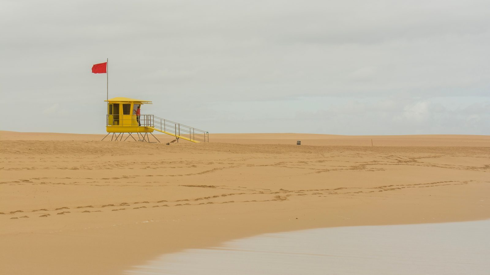

Itapema · Segurança
Itapema · SegurançaItapema já assinou R$ 449,7 mil em 2026 para equipar e abrigar o Corpo de Bombeiros, que é órgão do estado, e três dessas compras saíram em dez dias
A outra conta que a cidade paga pela segurança da praia.
Em 29 de setembro a Prefeitura de Itapema assinou sete contratos de equipamento de operação veraneio, busca e resgate, que somam R$ 195.625,70, e não anunciou nenhum deles. Fomos ler a base de contratos do PNCP ano a ano. Somando a compra de agosto, a cidade já contratou R$ 209.738,00 em 2026, contra R$ 440.531,20 no mesmo pedaço de 2025. São R$ 230.793,20 a menos, ou 52%. Parte da queda tem explicação, porque o catálogo do consórcio encolheu de 60 para 50 itens. O maior contrato, de R$ 108.008,80, é de uniforme de guarda-vidas.
Em 30 segundos · Modo de Leitura, formato original Santa Informa
A temporada começa em dezembro.
O material da praia é comprado antes.
Em 29 de setembro, Itapema assinou sete contratos de uma vez.
Todos do mesmo objeto: operação veraneio, busca e resgate.
Somados, dão R$ 195.625,70.
A Prefeitura não anunciou nenhum.
Achamos os sete na base do PNCP.
O maior é de R$ 108.008,80.
É roupa de guarda-vidas.
Sozinho, é 55% do total.
Depois vêm R$ 37.125,00 em flutuador salva-vidas.
E R$ 24.500,00 em guarda-sóis.
O menor é o das bandeiras: R$ 2.953,05.
Bandeira de local perigoso, de local seguro e de águas-vivas.
Tudo sai da ata 184/2025 do CINCATARINA.
É um consórcio que faz o pregão por muitas cidades.
O pregão inteiro fechou em R$ 15,46 milhões.
Itapema pegou uma fatia.
No ano passado a cidade gastou mais.
Foram R$ 440.531,20 até 4 de outubro de 2025.
Este ano, R$ 209.738,00.
52% a menos.
Mas o catálogo deste ano é menor.
Caiu de 60 para 50 itens.
Saíram quadriciclo, rádio e protetor solar.
O que não está na ata não dá para comprar por ela.
Os extratos não dizem quantidade.
Então não sabemos quantas bandeiras são.
A equipe da areia está sendo montada agora.
São 60 vagas de guarda-vidas voluntário.
O teste físico é em 7 de outubro.
As aulas vão até 4 de dezembro.
A soma dos contratos é conta nossa.
Poder PúblicoPublicada em Redação Santa Informa

Numa única terça-feira, 29 de setembro, a Prefeitura de Itapema assinou sete contratos com o mesmo objeto: equipamentos de operação veraneio, busca e resgate. Juntos, dão R$ 195.625,70. Nenhum virou nota no site da Prefeitura, onde a última notícia com a palavra veraneio é de dezembro de 2020. Achamos os sete na base do PNCP, o portal nacional de contratações, e somamos.
Os sete saem da mesma ata de registro de preços, a 184/2025 do CINCATARINA, o Consórcio Interfederativo Santa Catarina. O consórcio faz o pregão uma vez, fixa preço e fornecedor, e cada cidade entra depois e paga a sua parte. Esse pregão abriu em janeiro e fechou em R$ 15.464.014,66 para todos os entes juntos. Os R$ 195,6 mil de Itapema são uma fatia dele.
Os extratos não dizem quantidade, mas a ata registra item por item quem venceu, e por aí dá para saber o que cada um entrega. O maior contrato, R$ 108.008,80, é roupa: calça, calção, camiseta e jaqueta corta-vento de guarda-vidas, mais bolsa porta-rádio. Sozinho é 55% do total. Depois vêm R$ 37.125,00 em flutuador salva-vidas, o lifebelt que o guarda-vidas leva na mão, R$ 24.500,00 em guarda-sóis, R$ 9.720,00 em fita zebrada e megafone e R$ 4.023,85 em cadeira e colchonete. O mais barato, R$ 2.953,05, é o das bandeiras: local perigoso, local seguro, águas-vivas e as quatro de sinalização de posto.
O lote de pré-temporada de 2025 foi maior: 15 contratos entre 9 e 17 de setembro, somando R$ 402.433,20. No ano até 4 de outubro, 2025 teve 17 contratos e R$ 440.531,20, contra 8 e R$ 209.738,00 agora. Só que a queda não é toda corte. Comparamos as duas atas: o catálogo caiu de 60 para 50 itens. Saíram quadriciclo, rádio talkabout, protetor solar, sandália, sacochila, tenda gazebo e o pranchão de salvamento. Item fora da ata não se compra por ela.
A equipe da areia está sendo montada agora. Em agosto contamos que o 2º/13º Batalhão de Bombeiros de Itapema abriu 60 vagas de guarda-vidas civil voluntário. O teste físico ficou marcado para 7 de outubro, em Itajaí, e as aulas vão de 26 de outubro a 4 de dezembro. Os sete contratos valem até 29 de outubro.
O resumo de 30 segundos está no topo e a versão completa é o texto acima. Aqui ficam as três leituras da casa sobre o mesmo assunto.
Clara, a otimista
Comprar em setembro o que vai para a areia em dezembro é o jeito certo de fazer. Dá tempo de entregar, de conferir tamanho de camiseta e de trocar o que vier errado. Quem já viu material de praia chegar em janeiro sabe a diferença que isso faz.
E repare no que entrou na lista: bandeira de águas-vivas, bandeira de local perigoso, placa de posto. É o equipamento que avisa o banhista antes de qualquer coisa acontecer. Custa pouco e é o que mais trabalha no verão inteiro.
Seu Prudêncio, o criterioso
Merece atenção a falta de quantidade nos extratos. Saber que foram R$ 2.953,05 em bandeiras não diz se a cidade terá bandeira suficiente para todos os postos da Meia Praia e do Centro. Valor sem quantidade não permite acompanhar nada, nem comparar com o ano que vem.
Uma sugestão útil para a Secretaria: publicar, junto com a abertura da operação, a lista do que foi comprado com número de peças e a quantidade de postos que vão funcionar. É informação que a Prefeitura já tem na mão e que custa uma nota no site.
Dito isso, o calendário está bem armado. A compra saiu um mês antes da formação dos voluntários, a vigência cobre o período de entrega e o caminho da ata de consórcio costuma sair mais barato que pregão próprio de cidade pequena. Nisso a administração acertou o tempo.
Caco, o sarcástico
Cento e oito mil em camiseta e calção, dois mil e novecentos em bandeira. Ou seja: o guarda-vidas vai estar impecável avisando você do perigo com um paninho que custou menos que o uniforme dele.
E a Prefeitura comprou tudo isso em silêncio absoluto. A última vez que o site dela falou em operação veraneio foi em 2020. Seis anos calada e, quando abre a boca, é para avisar que a bandeira vermelha é melhor levar a sério.
Agora, sem ironia: material comprado em setembro é material que chega. Antecedência em segurança de praia não é burocracia, é gente voltando viva da água. Que venha a lista com os números, e a gente para de implicar.
Fontes: os contratos foram lidos na base aberta do Portal Nacional de Contratações Públicas, contratos do Município de Itapema assinados em 29 de setembro de 2026, e a série dos dois anos saiu da mesma base, nas consultas de 2025 e de 2026. O pregão do consórcio, com objeto, datas e valor homologado, está na ficha da ata de registro de preços 184/2025 do CINCATARINA, e a lista de itens com o fornecedor vencedor de cada um veio da relação de itens dessa ata, conferida item a item. O catálogo de 2025, usado na comparação, é o da ata 14/2025. A busca por "veraneio" no site da Prefeitura de Itapema devolve sete resultados, o mais recente de 23 de dezembro de 2020. As vagas de guarda-vidas voluntário e as datas do curso saíram na matéria de 20 de agosto, e as compras da cidade para o Corpo de Bombeiros estão nesta de hoje. A soma dos sete contratos, a comparação entre os dois anos, o percentual de queda e a diferença entre os catálogos são conta nossa, feita em 4 de outubro de 2026.
Itapema · SegurançaA outra conta que a cidade paga pela segurança da praia.
 Itapema · Segurança
Itapema · SegurançaQuem vai vestir o uniforme comprado agora.
 Itapema · Segurança
Itapema · SegurançaO outro braço de segurança que a cidade banca sozinha.